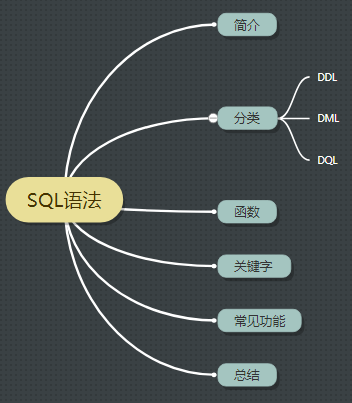

<!DOCTYPE HTML>
<html lang="zh-CN">
<head><meta name="generator" content="Hexo 3.8.0">
    <!--Setting-->
    <meta charset="UTF-8">
    <meta name="viewport" content="width=device-width, user-scalable=no, initial-scale=1.0, maximum-scale=1.0, minimum-scale=1.0">
    <meta http-equiv="X-UA-Compatible" content="IE=Edge,chrome=1">
    <meta http-equiv="Cache-Control" content="no-siteapp">
    <meta http-equiv="Cache-Control" content="no-transform">
    <meta name="renderer" content="webkit|ie-comp|ie-stand">
    <meta name="apple-mobile-web-app-capable" content="我的博客 - blog">
    <meta name="apple-mobile-web-app-status-bar-style" content="black">
    <meta name="format-detection" content="telephone=no,email=no,adress=no">
    <meta name="browsermode" content="application">
    <meta name="screen-orientation" content="portrait">
    <link rel="dns-prefetch" href="https://lives.xtcgch.ink">
    <!--SEO-->

<meta name="description" content="脑容量不够，笔记来凑">


<meta name="robots" content="all">
<meta name="google" content="all">
<meta name="googlebot" content="all">
<meta name="verify" content="all">
    <!--Title-->


<title>【专项】 数据库之SQL | 我的博客 - blog</title>


    <link rel="alternate" href="/atom.xml" title="我的博客 - blog" type="application/atom+xml">


    <link rel="icon" href="https://blog.xtcgch.ink/img/background/海绵宝宝.ico">

    


<link rel="stylesheet" href="/css/bootstrap.min.css?rev=3.3.7">
<link rel="stylesheet" href="/css/font-awesome.min.css?rev=4.5.0">
<link rel="stylesheet" href="/css/style.css?rev=@@hash">


    


    

</head>

</html>
<!--[if lte IE 8]>
<style>
    html{ font-size: 1em }
</style>
<![endif]-->
<!--[if lte IE 9]>
<div style="ie">你使用的浏览器版本过低，为了你更好的阅读体验，请更新浏览器的版本或者使用其他现代浏览器，比如Chrome、Firefox、Safari等。</div>
<![endif]-->

<body>
    <header class="main-header" style="background-image:url(https://blog.xtcgch.ink/img/head-bg.jpg)">
    <div class="main-header-box">
        <a class="header-avatar" href="/" title="unistd68">
            
        </a>
        <div class="branding">
        	<!--<h2 class="text-hide">Snippet主题,从未如此简单有趣</h2>-->
            
                <h2> 脑容量不够，笔记来凑 </h2>
            
    	</div>
    </div>
</header>
    <nav class="main-navigation">
    <div class="container">
        <div class="row">
            <div class="col-sm-12">
                <div class="navbar-header"><span class="nav-toggle-button collapsed pull-right" data-toggle="collapse" data-target="#main-menu" id="mnav">
                    <span class="sr-only"></span>
                        <i class="fa fa-bars"></i>
                    </span>
                    <a class="navbar-brand" href="https://lives.xtcgch.ink">我的博客 - blog</a>
                </div>
                <div class="collapse navbar-collapse" id="main-menu">
                    <ul class="menu">
                        
                            <li role="presentation" class="text-center">
                                <a href="https://blog.xtcgch.ink/"><i class="fa "></i>主页</a>
                            </li>
                        
                            <li role="presentation" class="text-center">
                                <a href="https://blog.xtcgch.ink/categories/原理/"><i class="fa "></i>原理</a>
                            </li>
                        
                            <li role="presentation" class="text-center">
                                <a href="https://blog.xtcgch.ink/categories/实战/"><i class="fa "></i>实战</a>
                            </li>
                        
                            <li role="presentation" class="text-center">
                                <a href="https://blog.xtcgch.ink/categories/开源/"><i class="fa "></i>开源</a>
                            </li>
                        
                            <li role="presentation" class="text-center">
                                <a href="https://blog.xtcgch.ink/categories/求职/"><i class="fa "></i>求职</a>
                            </li>
                        
                            <li role="presentation" class="text-center">
                                <a href="https://blog.xtcgch.ink/categories/其他/"><i class="fa "></i>其他</a>
                            </li>
                        
                            <li role="presentation" class="text-center">
                                <a href="https://blog.xtcgch.ink/archives/"><i class="fa "></i>时间轴</a>
                            </li>
                        
                    </ul>
                </div>
            </div>
        </div>
    </div>
</nav>
    <section class="content-wrap">
        <div class="container">
            <div class="row">
                <main class="col-md-8 main-content m-post">
                    <p id="process"></p>
<article class="post">
    <div class="post-head">
        <h1 id="【专项】 数据库之SQL">
            
	            【专项】 数据库之SQL
            
        </h1>
        <div class="post-meta">
    
    
    <span class="categories-meta fa-wrap">
        <i class="fa fa-folder-open-o"></i>
        <a href="https://blog.xtcgch.ink/categories/专项">
            专项
        </a>
    </span>
    

    
    <span class="fa-wrap">
        <i class="fa fa-tags"></i>
        <span class="tags-meta">
            
                
                    <a href="https://blog.xtcgch.ink/tags/数据库" title="数据库">
                        数据库
                    </a>
                
                    <a href="https://blog.xtcgch.ink/tags/SQL" title="SQL">
                        SQL
                    </a>
                
            
        </span>
    </span>
    

    
        
        <span class="fa-wrap">
            <i class="fa fa-clock-o"></i>
            <span class="date-meta">2018/12/14</span>
        </span>
        
    
</div>

            
            
            <p class="fa fa-exclamation-triangle warning">
                本文于<strong>1084</strong>天之前发表，文中内容可能已经过时。
            </p>
        
    </div>
    
    <div class="post-body post-content">
        <p><strong>摘要：</strong>SQL 是一门 ANSI 的标准计算机语言，用来访问和操作数据库系统。SQL 语句用于取回和更新数据库中的数据。SQL 可与数据库程序协同工作，比如 MS</p>
<p> Access、DB2、Informix、MS SQL Server、Oracle、Sybase 以及其他数据库系统。除了 SQL 标准之外，大部分 SQL 数据库程序都拥有它们自己的私有扩展！</p>
<a id="more"></a>
<h2 id="1、脑图"><a href="#1、脑图" class="headerlink" title="1、脑图"></a>1、脑图</h2><p></p>
<hr>
<h2 id="2、分类"><a href="#2、分类" class="headerlink" title="2、分类"></a>2、分类</h2><h3 id="2-1-DDL"><a href="#2-1-DDL" class="headerlink" title="2.1 DDL"></a>2.1 DDL</h3><p>数据定义语言DDL用来创建数据库中的各种对象—–表、视图、 索引、同义词、聚簇等如： CREATE TABLE/VIEW/INDEX/SYN/CLUSTER | | | | | 表 视图 索引 同义词 簇</p>
<h3 id="2-2-DML"><a href="#2-2-DML" class="headerlink" title="2.2 DML"></a>2.2 DML</h3><p>数据操纵语言DML主要有三种形式： 1) 插入：INSERT 2) 更新：UPDATE 3) 删除：DELETE</p>
<h3 id="2-3-DQL"><a href="#2-3-DQL" class="headerlink" title="2.3 DQL"></a>2.3 DQL</h3><p>数据查询语言DQL基本结构是由SELECT子句，FROM子句，WHERE 子句组成的查询块。</p>
<hr>
<h2 id="3、关键字"><a href="#3、关键字" class="headerlink" title="3、关键字"></a>3、关键字</h2><h3 id="3-1-DISTINCT"><a href="#3-1-DISTINCT" class="headerlink" title="3.1 DISTINCT"></a>3.1 DISTINCT</h3><p>（1）说明</p>
<p>在表中，一个列可能会包含多个重复值，DISTINCT 关键词用于返回唯一不同的值。</p>
<p>（2）用法</p>
<ul>
<li>SELECT DISTINCT 列名称 FROM 表名称</li>
</ul>
<p>（3）例子</p>
<ul>
<li>SELECT DISTINCT Company FROM Orders</li>
</ul>
<h3 id="3-2-TOP"><a href="#3-2-TOP" class="headerlink" title="3.2 TOP"></a>3.2 TOP</h3><p>（1）说明</p>
<p>SELECT TOP 子句用于规定要返回的记录的数目。可筛选指定数目或比例。<br>注意：并非所有的数据库系统都支持 SELECT TOP 语句。 MySQL 支持 LIMIT 语句来选取指定的条数数据， Oracle 可以使用 ROWNUM 来选取。</p>
<p>（2）用法</p>
<ul>
<li>MySQL：SELECT column_name(s) FROM table_name LIMIT number</li>
<li>Oracle:SELECT column_name(s) FROM table_name WHERE ROWNUM &lt;= number</li>
</ul>
<p>（3）例子</p>
<ul>
<li>SELECT * FROM Persons LIMIT 5</li>
<li>SELECT * FROM Persons WHERE ROWNUM &lt;= 5</li>
<li>SELECT TOP 50 PERCENT * FROM Persons</li>
</ul>
<h3 id="3-3-LIKE"><a href="#3-3-LIKE" class="headerlink" title="3.3 LIKE"></a>3.3 LIKE</h3><p>（1）说明</p>
<p>LIKE 操作符用于在 WHERE 子句中搜索列中的指定模式。</p>
<p>（2）用法</p>
<ul>
<li>SELECT column_name(s) FROM table_name WHERE column_name LIKE pattern;</li>
<li></li>
</ul>
<p>（3）例子</p>
<ul>
<li>SELECT * FROM Websites WHERE name LIKE ‘G%’;<br>-</li>
</ul>
<h3 id="3-4-IN"><a href="#3-4-IN" class="headerlink" title="3.4 IN"></a>3.4 IN</h3><p>（1）说明</p>
<p>IN 操作符允许在 WHERE 子句中规定多个值。</p>
<p>（2）用法</p>
<ul>
<li>SELECT column_name(s) FROM table_name WHERE column_name IN (value1,value2,…);</li>
<li></li>
</ul>
<p>（3）例子</p>
<ul>
<li>SELECT * FROM Websites WHERE name IN (‘Google’,’菜鸟教程’);</li>
</ul>
<p>（4）in 与 =</p>
<ul>
<li><p>相同点：均在WHERE中使用作为筛选条件之一、均是等于的含义</p>
</li>
<li><p>不同点：IN可以规定多个值，等于规定一个值</p>
</li>
</ul>
<h3 id="3-5-BETWEEN"><a href="#3-5-BETWEEN" class="headerlink" title="3.5 BETWEEN"></a>3.5 BETWEEN</h3><p>（1）说明</p>
<p>BETWEEN 操作符用于选取介于两个值之间的数据范围内的值。</p>
<p>（2）用法</p>
<ul>
<li>SELECT column_name(s) FROM table_name WHERE column_name BETWEEN value1 AND value2;</li>
<li></li>
</ul>
<p>（3）例子</p>
<ul>
<li>SELECT * FROM Websites WHERE alexa <strong>BETWEEN</strong> 1 AND 20;</li>
<li>SELECT * FROM Websites WHERE alexa <strong>NOT BETWEEN</strong> 1 AND 20;</li>
</ul>
<h3 id="3-6-Alias"><a href="#3-6-Alias" class="headerlink" title="3.6 Alias"></a>3.6 Alias</h3><p>（1）说明</p>
<p>使用列别名和表别名来简化列名和表名。</p>
<p>（2）用法</p>
<ul>
<li>SELECT <strong>column_name</strong> AS alias_name FROM table_name;</li>
<li>SELECT column_name(s) FROM <strong>table_name</strong> AS alias_name;</li>
</ul>
<p>（3）例子</p>
<ul>
<li>SELECT name AS n, country AS c FROM Websites;</li>
<li>SELECT w.name, w.url, a.count, a.date FROM Websites AS w, access_log AS a  WHERE a.site_id=w.id and w.name=”菜鸟教程”;</li>
</ul>
<h3 id="3-7-JOIN"><a href="#3-7-JOIN" class="headerlink" title="3.7 JOIN"></a>3.7 JOIN</h3><p>（1）说明</p>
<p>SQL JOIN 子句用于把来自两个或多个表的行结合起来，基于这些表之间的共同字段。</p>
<p>（2）用法</p>
<ul>
<li>SELECT Websites.id, Websites.name, access_log.count, access_log.date FROM Websites <strong>INNER JOIN</strong> access_log <strong>ON</strong> Websites.id=access_log.site_id;</li>
</ul>
<p>（3）例子</p>
<p>（4）区别</p>
<ul>
<li><p>INNER JOIN：如果表中有至少一个匹配，则返回行</p>
</li>
<li><p>LEFT JOIN：即使右表中没有匹配，也从左表返回所有的行</p>
</li>
<li><p>RIGHT JOIN：即使左表中没有匹配，也从右表返回所有的行</p>
</li>
<li><p>FULL JOIN：只要其中一个表中存在匹配，则返回行</p>
</li>
</ul>
<h3 id="3-8-INNER-JOIN"><a href="#3-8-INNER-JOIN" class="headerlink" title="3.8 INNER JOIN"></a>3.8 INNER JOIN</h3><p>（1）说明</p>
<p>INNER JOIN 关键字在表中存在至少一个匹配时返回行。</p>
<p>（2）用法</p>
<ul>
<li>SELECT column_name(s) FROM table1 <strong>INNER JOIN</strong> table2 <strong>ON</strong> table1.column_name=table2.column_name;</li>
</ul>
<p>（3）例子</p>
<ul>
<li>SELECT Websites.name, access_log.count, access_log.date FROM Websites <strong>INNER JOIN</strong> access_log <strong>ON</strong> Websites.id=access_log.site_id ORDER BY access_log.count;</li>
</ul>
<h3 id="3-9-LEFT-JOIN"><a href="#3-9-LEFT-JOIN" class="headerlink" title="3.9 LEFT JOIN"></a>3.9 LEFT JOIN</h3><p>（1）说明</p>
<p>LEFT JOIN 关键字从左表（table1）返回所有的行，即使右表（table2）中没有匹配。如果右表中没有匹配，则结果为 NULL。</p>
<p>（2）用法</p>
<ul>
<li>SELECT column_name(s) FROM table1 <strong>LEFT JOIN</strong> table2 <strong>ON</strong> table1.column_name=table2.column_name;</li>
</ul>
<p>（3）例子</p>
<ul>
<li>SELECT Websites.name, access_log.count, access_log.date FROM Websites <strong>LEFT JOIN</strong> access_log <strong>ON</strong> Websites.id=access_log.site_id ORDER BY access_log.count DESC;</li>
</ul>
<h3 id="3-10-RIGHT-JOIN"><a href="#3-10-RIGHT-JOIN" class="headerlink" title="3.10 RIGHT JOIN"></a>3.10 RIGHT JOIN</h3><p>（1）说明</p>
<p>RIGHT JOIN 关键字从右表（table2）返回所有的行，即使左表（table1）中没有匹配。如果左表中没有匹配，则结果为 NULL。</p>
<p>（2）用法</p>
<ul>
<li>SELECT column_name(s) FROM table1 RIGHT JOIN table2 ON table1.column_name=table2.column_name;</li>
</ul>
<p>（3）例子</p>
<ul>
<li>SELECT Websites.name, access_log.count, access_log.date FROM access_log RIGHT JOIN Websites ON access_log.site_id=Websites.id ORDER BY access_log.count DESC;</li>
</ul>
<h3 id="3-11-FULL-JOIN"><a href="#3-11-FULL-JOIN" class="headerlink" title="3.11 FULL  JOIN"></a>3.11 FULL  JOIN</h3><p>（1）说明</p>
<p>FULL OUTER JOIN 关键字只要左表（table1）和右表（table2）其中一个表中存在匹配，则返回行.</p>
<p>FULL OUTER JOIN 关键字结合了 LEFT JOIN 和 RIGHT JOIN 的结果。</p>
<p>（2）用法</p>
<ul>
<li>SELECT column_name(s) FROM table1 FULL OUTER JOIN table2 ON table1.column_name=table2.column_name;</li>
</ul>
<p>（3）例子</p>
<ul>
<li>SELECT Websites.name, access_log.count, access_log.date FROM Websites FULL OUTER JOIN access_log ON Websites.id=access_log.site_id<br>ORDER BY access_log.count DESC;</li>
</ul>
<h3 id="3-12-UNION"><a href="#3-12-UNION" class="headerlink" title="3.12 UNION"></a>3.12 UNION</h3><p>（1）说明</p>
<p>SQL UNION 操作符合并两个或多个 SELECT 语句的结果。</p>
<p>请注意，UNION 内部的每个 SELECT 语句必须拥有相同数量的列。列也必须拥有相似的数据类型。同时，每个 SELECT 语句中的列的顺序必须相同。</p>
<p>（2）用法</p>
<ul>
<li>SELECT column_name(s) FROM table1 <strong>UNION</strong> SELECT column_name(s) FROM table2;</li>
</ul>
<p>（3）例子</p>
<ul>
<li>SELECT country FROM Websites UNION SELECT country FROM apps ORDER BY country;</li>
</ul>
<h3 id="3-13-SELECT-INTO"><a href="#3-13-SELECT-INTO" class="headerlink" title="3.13 SELECT INTO"></a>3.13 SELECT INTO</h3><p>（1）说明</p>
<p>通过 SQL，您可以从一个表复制信息到另一个表。</p>
<p>SELECT INTO 语句从一个表复制数据，然后把数据插入到另一个新表中。</p>
<p>（2）用法</p>
<ul>
<li><p>SELECT * INTO newtable [IN externaldb] FROM table1;</p>
</li>
<li><p>SELECT column_name(s) INTO newtable [IN externaldb] FROM table1;</p>
</li>
</ul>
<p>（3）例子</p>
<ul>
<li><p>SELECT * INTO WebsitesBackup2016 FROM Websites;</p>
</li>
<li><p>SELECT name, url INTO WebsitesBackup2016 FROM Websites;</p>
</li>
</ul>
<h3 id="3-14-NULL"><a href="#3-14-NULL" class="headerlink" title="3.14 NULL"></a>3.14 NULL</h3><p>（1）说明</p>
<p>NULL 值的处理方式与其他值不同。</p>
<p>NULL 用作未知的或不适用的值的占位符。</p>
<p>（2）用法</p>
<p>（3）例子</p>
<ul>
<li><p>IS NOT NULL:SELECT LastName,FirstName,Address FROM Persons WHERE Address IS NOT NULL</p>
</li>
<li><p>IS NULL: SELECT LastName,FirstName,Address FROM Persons WHERE Address IS NULL</p>
</li>
</ul>
<hr>
<h2 id="4、函数"><a href="#4、函数" class="headerlink" title="4、函数"></a>4、函数</h2><h3 id="4-1-时间函数"><a href="#4-1-时间函数" class="headerlink" title="4.1 时间函数"></a>4.1 时间函数</h3><p>（1）用法</p>
<ul>
<li>NOW():</li>
<li>CURDATE()：</li>
<li>CURTIME()：</li>
<li>DATE()：</li>
<li>EXTRACT()：</li>
<li>DATE_ADD()：</li>
<li>DATE_SUB()：</li>
<li>DATEDIFF()：</li>
<li>DATE_FORMAT()：</li>
</ul>
<p>（2）例子</p>
<h3 id="4-2-AVG"><a href="#4-2-AVG" class="headerlink" title="4.2  AVG()"></a>4.2  AVG()</h3><p>（1）说明</p>
<p>AVG() 函数返回数值列的平均值。</p>
<p>（2）用法</p>
<ul>
<li>SELECT AVG(column_name) FROM table_name</li>
</ul>
<p>（3）例子</p>
<ul>
<li>SELECT AVG(count) AS CountAverage FROM access_log;</li>
</ul>
<h3 id="4-3-COUNT"><a href="#4-3-COUNT" class="headerlink" title="4.3 COUNT()"></a>4.3 COUNT()</h3><p>（1）说明</p>
<p>COUNT() 函数返回匹配指定条件的行数。</p>
<p>（2）用法</p>
<ul>
<li><p>SELECT COUNT(column_name) FROM table_name;</p>
</li>
<li><p>SELECT COUNT( * ) FROM table_name;</p>
</li>
<li><p>SELECT COUNT(DISTINCT column_name) FROM table_name;</p>
</li>
</ul>
<p>（3）例子</p>
<ul>
<li>SELECT COUNT(count) AS nums FROM access_log WHERE site_id=3;</li>
<li>SELECT COUNT( * ) AS nums FROM access_log;</li>
<li>SELECT COUNT(DISTINCT site_id) AS nums FROM access_log;</li>
</ul>
<h3 id="4-4-FIRST"><a href="#4-4-FIRST" class="headerlink" title="4.4 FIRST()"></a>4.4 FIRST()</h3><p>（1）说明</p>
<p>FIRST() 函数返回指定的列中第一个记录的值。<br>注意：只有 MS Access 支持 FIRST() 函数</p>
<p>（2）用法</p>
<ul>
<li><p>SELECT column_name FROM table_name ORDER BY column_name ASC LIMIT 1;</p>
</li>
<li><p>SELECT column_name FROM table_name ORDER BY column_name ASC WHERE ROWNUM &lt;=1</p>
</li>
</ul>
<p>（3）例子</p>
<ul>
<li><p>SELECT name FROM Websites ORDER BY id ASC LIMIT 1;</p>
</li>
<li><p>SELECT name FROM Websites ORDER BY id ASC WHERE ROWNUM &lt;=1;</p>
</li>
</ul>
<h3 id="4-5-LAST"><a href="#4-5-LAST" class="headerlink" title="4.5 LAST()"></a>4.5 LAST()</h3><p>（1）说明</p>
<p>LAST() 函数返回指定的列中最后一个记录的值。<br>注意：只有 MS Access 支持 LAST() 函数。</p>
<p>（2）用法</p>
<ul>
<li>SELECT column_name FROM table_name ORDER BY column_name DESC LIMIT 1;</li>
<li>SELECT column_name FROM table_name ORDER BY column_name DESC WHERE ROWNUM &lt;=1;</li>
</ul>
<p>（3）例子</p>
<ul>
<li>SELECT name FROM Websites ORDER BY id DESC LIMIT 1;</li>
<li>SELECT name FROM Websites ORDER BY id DESC WHERE ROWNUM &lt;=1;</li>
</ul>
<h3 id="4-6-MAX"><a href="#4-6-MAX" class="headerlink" title="4.6  MAX()"></a>4.6  MAX()</h3><p>（1）说明</p>
<p>MAX() 函数返回指定列的最大值。</p>
<p>（2）用法</p>
<ul>
<li>SELECT MAX(column_name) FROM table_name;</li>
</ul>
<p>（3）例子</p>
<ul>
<li>SELECT MAX(alexa) AS max_alexa FROM Websites;</li>
</ul>
<h3 id="4-7-MIN"><a href="#4-7-MIN" class="headerlink" title="4.7  MIN()"></a>4.7  MIN()</h3><p>（1）说明</p>
<p>MIN() 函数返回指定列的最小值。</p>
<p>（2）用法</p>
<ul>
<li>SELECT MIN(column_name) FROM table_name;</li>
</ul>
<p>（3）例子</p>
<ul>
<li>SELECT MIN(alexa) AS min_alexa FROM Websites;</li>
</ul>
<h3 id="4-8-值为NULL的判断"><a href="#4-8-值为NULL的判断" class="headerlink" title="4.8  值为NULL的判断"></a>4.8  值为NULL的判断</h3><p>（1）说明</p>
<p>（2）用法</p>
<ul>
<li>IFNULL()</li>
<li>COALESCE()</li>
<li>NVL()</li>
</ul>
<p>（3）例子</p>
<ul>
<li>SELECT ProductName,UnitPrice * (UnitsInStock+IFNULL(UnitsOnOrder,0)) FROM Products</li>
<li>SELECT ProductName,UnitPrice * (UnitsInStock+COALESCE(UnitsOnOrder,0)) FROM Products</li>
<li>SELECT ProductName,UnitPrice * (UnitsInStock+NVL(UnitsOnOrder,0)) FROM Products</li>
</ul>
<h3 id="4-9-SUM"><a href="#4-9-SUM" class="headerlink" title="4.9 SUM()"></a>4.9 SUM()</h3><p>（1）说明</p>
<p>SUM() 函数返回数值列的总数。</p>
<p>（2）用法</p>
<ul>
<li>SELECT SUM(column_name) FROM table_name;- </li>
</ul>
<p>（3）例子</p>
<ul>
<li>SELECT SUM(count) AS nums FROM access_log;-</li>
</ul>
<h3 id="4-10-HAVING"><a href="#4-10-HAVING" class="headerlink" title="4.10 HAVING"></a>4.10 HAVING</h3><p>（1）说明</p>
<p>在 SQL 中增加 HAVING 子句原因是，WHERE 关键字无法与聚合函数一起使用。</p>
<p>HAVING 子句可以让我们筛选分组后的各组数据。</p>
<p>（2）用法</p>
<ul>
<li>SELECT column_name, aggregate_function(column_name) FROM table_name WHERE column_name operator value GROUP BY column_name HAVING aggregate_function(column_name) operator value;</li>
</ul>
<p>（3）例子</p>
<ul>
<li>SELECT Websites.name, Websites.url, SUM(access_log.count) AS nums FROM (access_log INNER JOIN Websites ON access_log.site_id=Websites.id) GROUP BY Websites.name HAVING SUM(access_log.count) &gt; 200;</li>
</ul>
<h3 id="4-11-UCASE"><a href="#4-11-UCASE" class="headerlink" title="4.11 UCASE()"></a>4.11 UCASE()</h3><p>（1）说明</p>
<p>UCASE() 函数把字段的值转换为大写。</p>
<p>（2）用法</p>
<ul>
<li>SELECT UCASE(column_name) FROM table_name; </li>
</ul>
<p>（3）例子</p>
<ul>
<li>SELECT UCASE(name) AS site_title, url FROM Websites;</li>
</ul>
<h3 id="4-12-LCASE"><a href="#4-12-LCASE" class="headerlink" title="4.12 LCASE()"></a>4.12 LCASE()</h3><p>（1）说明</p>
<p>LCASE() 函数把字段的值转换为小写。</p>
<p>（2）用法</p>
<ul>
<li>SELECT LCASE(column_name) FROM table_name; </li>
</ul>
<p>（3）例子</p>
<ul>
<li>SELECT LCASE(name) AS site_title, url FROM Websites;</li>
</ul>
<h3 id="4-13-MID"><a href="#4-13-MID" class="headerlink" title="4.13 MID()"></a>4.13 MID()</h3><p>（1）说明</p>
<p>MID() 函数用于从文本字段中提取字符。</p>
<p>（2）用法</p>
<ul>
<li>SELECT MID(column_name,start[,length]) FROM table_name; </li>
</ul>
<p>（3）例子</p>
<ul>
<li>SELECT MID(name,1,4) AS ShortTitle FROM Websites;</li>
</ul>
<h3 id="4-14-LEN"><a href="#4-14-LEN" class="headerlink" title="4.14 LEN()"></a>4.14 LEN()</h3><p>（1）说明</p>
<p>LEN() 函数返回文本字段中值的长度。</p>
<p>（2）用法</p>
<ul>
<li>SELECT LEN(column_name) FROM table_name; </li>
</ul>
<p>（3）例子</p>
<ul>
<li>SELECT name, LENGTH(url) as LengthOfURL FROM Websites;</li>
</ul>
<h3 id="4-15-ROUND"><a href="#4-15-ROUND" class="headerlink" title="4.15 ROUND()"></a>4.15 ROUND()</h3><p>（1）说明</p>
<p>ROUND 函数用于把数值字段舍入为指定的小数位数。</p>
<p>（2）用法</p>
<ul>
<li>SELECT ROUND(column_name,decimals) FROM table_name</li>
<li></li>
</ul>
<p>（3）例子</p>
<ul>
<li>SELECT ProductName, ROUND(UnitPrice,0) as UnitPrice FROM Products<br>-</li>
</ul>
<h3 id="4-16-NOW"><a href="#4-16-NOW" class="headerlink" title="4.16 NOW()"></a>4.16 NOW()</h3><p>（1）说明</p>
<p>NOW() 函数返回当前系统的日期和时间。</p>
<p>（2）用法</p>
<ul>
<li>SELECT NOW() FROM table_name</li>
</ul>
<p>（3）例子</p>
<ul>
<li>SELECT name, url, Now() AS date FROM Websites;</li>
</ul>
<h3 id="4-17-FORMAT"><a href="#4-17-FORMAT" class="headerlink" title="4.17 FORMAT()"></a>4.17 FORMAT()</h3><p>（1）说明</p>
<p>FORMAT() 函数用于对字段的显示进行格式化。</p>
<p>（2）用法</p>
<ul>
<li>SELECT FORMAT(column_name,format) FROM table_name</li>
<li></li>
</ul>
<p>（3）例子</p>
<ul>
<li>SELECT ProductName, UnitPrice, FORMAT(Now(),’YYYY-MM-DD’) as PerDate FROM Products</li>
</ul>
<hr>
<h2 id="5、常见功能"><a href="#5、常见功能" class="headerlink" title="5、常见功能"></a>5、常见功能</h2><h3 id="5-1-建库"><a href="#5-1-建库" class="headerlink" title="5.1 建库"></a>5.1 建库</h3><p>（1）用法</p>
<p>CREATE DATABASE</p>
<p>（2）例子</p>
<h3 id="5-2-修改库"><a href="#5-2-修改库" class="headerlink" title="5.2 修改库"></a>5.2 修改库</h3><p>（1）用法</p>
<p>ALTER DATABASE</p>
<p>（2）例子</p>
<h3 id="5-3-删库"><a href="#5-3-删库" class="headerlink" title="5.3 删库"></a>5.3 删库</h3><p>（1）用法</p>
<p>DROP DATABASE</p>
<p>（2）例子</p>
<h3 id="5-4-建表"><a href="#5-4-建表" class="headerlink" title="5.4 建表"></a>5.4 建表</h3><p>（1）用法</p>
<p>CREATE TABLE</p>
<p>（2）例子</p>
<h3 id="5-5-修改表"><a href="#5-5-修改表" class="headerlink" title="5.5 修改表"></a>5.5 修改表</h3><p>（1）用法</p>
<p>ALTER TABLE</p>
<p>（2）例子</p>
<h3 id="5-6-删表"><a href="#5-6-删表" class="headerlink" title="5.6 删表"></a>5.6 删表</h3><p>（1）用法</p>
<p>DROP TABLE </p>
<p>（2）例子</p>
<h3 id="5-7-建索引"><a href="#5-7-建索引" class="headerlink" title="5.7 建索引"></a>5.7 建索引</h3><p>（1）用法</p>
<p>CREATE INDEX</p>
<p>（2）例子</p>
<h3 id="5-8-删索引"><a href="#5-8-删索引" class="headerlink" title="5.8 删索引"></a>5.8 删索引</h3><p>（1）用法</p>
<p>DROP INDEX</p>
<p>（2）例子</p>
<h3 id="5-9-创建视图"><a href="#5-9-创建视图" class="headerlink" title="5.9 创建视图"></a>5.9 创建视图</h3><p>（1）用法</p>
<figure class="highlight plain"><table><tr><td class="gutter"><pre><span class="line">1</span><br><span class="line">2</span><br><span class="line">3</span><br><span class="line">4</span><br></pre></td><td class="code"><pre><span class="line">CREATE VIEW view_name AS</span><br><span class="line">SELECT column_name(s)</span><br><span class="line">FROM table_name</span><br><span class="line">WHERE condition</span><br></pre></td></tr></table></figure>
<p>（2）例子</p>
<figure class="highlight plain"><table><tr><td class="gutter"><pre><span class="line">1</span><br><span class="line">2</span><br><span class="line">3</span><br><span class="line">4</span><br></pre></td><td class="code"><pre><span class="line">CREATE VIEW [Current Product List] AS</span><br><span class="line">SELECT ProductID,ProductName</span><br><span class="line">FROM Products</span><br><span class="line">WHERE Discontinued=No</span><br></pre></td></tr></table></figure>
<h3 id="5-10-更新视图"><a href="#5-10-更新视图" class="headerlink" title="5.10 更新视图"></a>5.10 更新视图</h3><p>（1）用法</p>
<figure class="highlight plain"><table><tr><td class="gutter"><pre><span class="line">1</span><br><span class="line">2</span><br><span class="line">3</span><br><span class="line">4</span><br></pre></td><td class="code"><pre><span class="line">CREATE OR REPLACE VIEW view_name AS</span><br><span class="line">SELECT column_name(s)</span><br><span class="line">FROM table_name</span><br><span class="line">WHERE condition</span><br></pre></td></tr></table></figure>
<p>（2）例子</p>
<figure class="highlight plain"><table><tr><td class="gutter"><pre><span class="line">1</span><br><span class="line">2</span><br><span class="line">3</span><br><span class="line">4</span><br></pre></td><td class="code"><pre><span class="line">CREATE VIEW [Current Product List] AS</span><br><span class="line">SELECT ProductID,ProductName,Category</span><br><span class="line">FROM Products</span><br><span class="line">WHERE Discontinued=No</span><br></pre></td></tr></table></figure>
<h3 id="5-11-删除视图"><a href="#5-11-删除视图" class="headerlink" title="5.11 删除视图"></a>5.11 删除视图</h3><p>（1）用法</p>
<p>DROP VIEW view_name</p>
<p>（2）例子</p>
<hr>
<h2 id="6、实用例子"><a href="#6、实用例子" class="headerlink" title="6、实用例子"></a><table><tr><td bgcolor="#C7C7C7">6、实用例子</td></tr></table></h2><p>1、查看表结构</p>
<ul>
<li>show create table xxx （详细，推荐）</li>
<li>describe xxx （简单）</li>
</ul>
<p>2、查看一条数据的详细信息</p>
<ul>
<li>select <strong><em> from </em></strong> where *** \G (\G的效果是竖直排列，左边是表头，右边是数据)</li>
</ul>
<p>3、连接mysql数据库</p>
<ul>
<li>mysql -hxxx(IP) -Pxxx(端口) -uxxx(用户名) -pxxx(密码) -A –default-charset=utf8 xxx(dbname)</li>
</ul>
<p>4、合计</p>
<ul>
<li>select sum(amount),count(1),date from xxx group by date</li>
</ul>
<p>5、选择判断</p>
<ul>
<li>select if(sex = 1,amount,-amount) from xxx where id = xxx </li>
</ul>
<p>6、包括所有在 TableA 中但不在 TableB和TableC 中的行并消除所有重复行而派生出一个结果表<br><figure class="highlight plain"><table><tr><td class="gutter"><pre><span class="line">1</span><br></pre></td><td class="code"><pre><span class="line">(select a from tableA ) except (select a from tableB) except (select a from tableC)</span><br></pre></td></tr></table></figure></p>
<p>7、随机取出10条数据<br><figure class="highlight plain"><table><tr><td class="gutter"><pre><span class="line">1</span><br></pre></td><td class="code"><pre><span class="line">select top 10 * from tablename order by newid()</span><br></pre></td></tr></table></figure></p>
<p>8、初始化表table1<br><figure class="highlight plain"><table><tr><td class="gutter"><pre><span class="line">1</span><br></pre></td><td class="code"><pre><span class="line">TRUNCATE TABLE table1</span><br></pre></td></tr></table></figure></p>
<p>9、选择第10到15的记录<br><figure class="highlight plain"><table><tr><td class="gutter"><pre><span class="line">1</span><br></pre></td><td class="code"><pre><span class="line">select top 5 * from (select top 15 * from table order by id asc) table_别名 order by id desc</span><br></pre></td></tr></table></figure></p>
<p>10、从两表中查询数据<br><figure class="highlight plain"><table><tr><td class="gutter"><pre><span class="line">1</span><br></pre></td><td class="code"><pre><span class="line">select a.name , b.class from Userinfo a inner join Grade b using(userno)</span><br></pre></td></tr></table></figure></p>
<hr>

    </div>
    
    <div class="post-footer">
        <div>
            
        </div>
        <div>
            
        </div>
    </div>
</article>

<div class="article-nav prev-next-wrap clearfix">
    
        <a href="/2018/12/16/数据结构之平衡树篇/" class="pre-post btn btn-default" title="【原理】 数据结构之平衡树篇">
            <i class="fa fa-angle-left fa-fw"></i><span class="hidden-lg">上一篇</span>
            <span class="hidden-xs">【原理】 数据结构之平衡树篇</span>
        </a>
    
    
        <a href="/2018/12/07/网络通信之信号驱动IO篇/" class="next-post btn btn-default" title="【原理】 网络通信之信号驱动IO篇">
            <span class="hidden-lg">下一篇</span>
            <span class="hidden-xs">【原理】 网络通信之信号驱动IO篇</span><i class="fa fa-angle-right fa-fw"></i>
        </a>
    
</div>


    <div id="comments">
        
    
    <div id="vcomments" class="valine"></div>
    <script src="//cdn1.lncld.net/static/js/3.0.4/av-min.js"></script>
<script src="/assets/valine.min.js"></script>

    <script>
        new Valine({
            av: AV,
            el: '#vcomments',
            appId: 'XWA5gq7VCJybw7YQhf5HG20r-gzGzoHsz',
            appKey: '8FW1WEwrysHXaUD1bhGn2Rp8',
            placeholder: '说点什么吧',
            notify: true,
            verify: false,
            avatar: 'https://blog.xtcgch.ink/img/comment-avatar.jpg',
            meta: 'nick,mail'.split(','),
            pageSize: '10',
            path: window.location.pathname,
            lang: 'zh-CN'.toLowerCase()
        })
    </script>


    </div>


                </main>
                
                    <aside id="article-toc" role="navigation" class="col-md-4">
    <div class="widget">
        <h3 class="title">文章目录</h3>
        
            <ol class="toc"><li class="toc-item toc-level-2"><a class="toc-link" href="#1、脑图"><span class="toc-text">1、脑图</span></a></li><li class="toc-item toc-level-2"><a class="toc-link" href="#2、分类"><span class="toc-text">2、分类</span></a><ol class="toc-child"><li class="toc-item toc-level-3"><a class="toc-link" href="#2-1-DDL"><span class="toc-text">2.1 DDL</span></a></li><li class="toc-item toc-level-3"><a class="toc-link" href="#2-2-DML"><span class="toc-text">2.2 DML</span></a></li><li class="toc-item toc-level-3"><a class="toc-link" href="#2-3-DQL"><span class="toc-text">2.3 DQL</span></a></li></ol></li><li class="toc-item toc-level-2"><a class="toc-link" href="#3、关键字"><span class="toc-text">3、关键字</span></a><ol class="toc-child"><li class="toc-item toc-level-3"><a class="toc-link" href="#3-1-DISTINCT"><span class="toc-text">3.1 DISTINCT</span></a></li><li class="toc-item toc-level-3"><a class="toc-link" href="#3-2-TOP"><span class="toc-text">3.2 TOP</span></a></li><li class="toc-item toc-level-3"><a class="toc-link" href="#3-3-LIKE"><span class="toc-text">3.3 LIKE</span></a></li><li class="toc-item toc-level-3"><a class="toc-link" href="#3-4-IN"><span class="toc-text">3.4 IN</span></a></li><li class="toc-item toc-level-3"><a class="toc-link" href="#3-5-BETWEEN"><span class="toc-text">3.5 BETWEEN</span></a></li><li class="toc-item toc-level-3"><a class="toc-link" href="#3-6-Alias"><span class="toc-text">3.6 Alias</span></a></li><li class="toc-item toc-level-3"><a class="toc-link" href="#3-7-JOIN"><span class="toc-text">3.7 JOIN</span></a></li><li class="toc-item toc-level-3"><a class="toc-link" href="#3-8-INNER-JOIN"><span class="toc-text">3.8 INNER JOIN</span></a></li><li class="toc-item toc-level-3"><a class="toc-link" href="#3-9-LEFT-JOIN"><span class="toc-text">3.9 LEFT JOIN</span></a></li><li class="toc-item toc-level-3"><a class="toc-link" href="#3-10-RIGHT-JOIN"><span class="toc-text">3.10 RIGHT JOIN</span></a></li><li class="toc-item toc-level-3"><a class="toc-link" href="#3-11-FULL-JOIN"><span class="toc-text">3.11 FULL  JOIN</span></a></li><li class="toc-item toc-level-3"><a class="toc-link" href="#3-12-UNION"><span class="toc-text">3.12 UNION</span></a></li><li class="toc-item toc-level-3"><a class="toc-link" href="#3-13-SELECT-INTO"><span class="toc-text">3.13 SELECT INTO</span></a></li><li class="toc-item toc-level-3"><a class="toc-link" href="#3-14-NULL"><span class="toc-text">3.14 NULL</span></a></li></ol></li><li class="toc-item toc-level-2"><a class="toc-link" href="#4、函数"><span class="toc-text">4、函数</span></a><ol class="toc-child"><li class="toc-item toc-level-3"><a class="toc-link" href="#4-1-时间函数"><span class="toc-text">4.1 时间函数</span></a></li><li class="toc-item toc-level-3"><a class="toc-link" href="#4-2-AVG"><span class="toc-text">4.2  AVG()</span></a></li><li class="toc-item toc-level-3"><a class="toc-link" href="#4-3-COUNT"><span class="toc-text">4.3 COUNT()</span></a></li><li class="toc-item toc-level-3"><a class="toc-link" href="#4-4-FIRST"><span class="toc-text">4.4 FIRST()</span></a></li><li class="toc-item toc-level-3"><a class="toc-link" href="#4-5-LAST"><span class="toc-text">4.5 LAST()</span></a></li><li class="toc-item toc-level-3"><a class="toc-link" href="#4-6-MAX"><span class="toc-text">4.6  MAX()</span></a></li><li class="toc-item toc-level-3"><a class="toc-link" href="#4-7-MIN"><span class="toc-text">4.7  MIN()</span></a></li><li class="toc-item toc-level-3"><a class="toc-link" href="#4-8-值为NULL的判断"><span class="toc-text">4.8  值为NULL的判断</span></a></li><li class="toc-item toc-level-3"><a class="toc-link" href="#4-9-SUM"><span class="toc-text">4.9 SUM()</span></a></li><li class="toc-item toc-level-3"><a class="toc-link" href="#4-10-HAVING"><span class="toc-text">4.10 HAVING</span></a></li><li class="toc-item toc-level-3"><a class="toc-link" href="#4-11-UCASE"><span class="toc-text">4.11 UCASE()</span></a></li><li class="toc-item toc-level-3"><a class="toc-link" href="#4-12-LCASE"><span class="toc-text">4.12 LCASE()</span></a></li><li class="toc-item toc-level-3"><a class="toc-link" href="#4-13-MID"><span class="toc-text">4.13 MID()</span></a></li><li class="toc-item toc-level-3"><a class="toc-link" href="#4-14-LEN"><span class="toc-text">4.14 LEN()</span></a></li><li class="toc-item toc-level-3"><a class="toc-link" href="#4-15-ROUND"><span class="toc-text">4.15 ROUND()</span></a></li><li class="toc-item toc-level-3"><a class="toc-link" href="#4-16-NOW"><span class="toc-text">4.16 NOW()</span></a></li><li class="toc-item toc-level-3"><a class="toc-link" href="#4-17-FORMAT"><span class="toc-text">4.17 FORMAT()</span></a></li></ol></li><li class="toc-item toc-level-2"><a class="toc-link" href="#5、常见功能"><span class="toc-text">5、常见功能</span></a><ol class="toc-child"><li class="toc-item toc-level-3"><a class="toc-link" href="#5-1-建库"><span class="toc-text">5.1 建库</span></a></li><li class="toc-item toc-level-3"><a class="toc-link" href="#5-2-修改库"><span class="toc-text">5.2 修改库</span></a></li><li class="toc-item toc-level-3"><a class="toc-link" href="#5-3-删库"><span class="toc-text">5.3 删库</span></a></li><li class="toc-item toc-level-3"><a class="toc-link" href="#5-4-建表"><span class="toc-text">5.4 建表</span></a></li><li class="toc-item toc-level-3"><a class="toc-link" href="#5-5-修改表"><span class="toc-text">5.5 修改表</span></a></li><li class="toc-item toc-level-3"><a class="toc-link" href="#5-6-删表"><span class="toc-text">5.6 删表</span></a></li><li class="toc-item toc-level-3"><a class="toc-link" href="#5-7-建索引"><span class="toc-text">5.7 建索引</span></a></li><li class="toc-item toc-level-3"><a class="toc-link" href="#5-8-删索引"><span class="toc-text">5.8 删索引</span></a></li><li class="toc-item toc-level-3"><a class="toc-link" href="#5-9-创建视图"><span class="toc-text">5.9 创建视图</span></a></li><li class="toc-item toc-level-3"><a class="toc-link" href="#5-10-更新视图"><span class="toc-text">5.10 更新视图</span></a></li><li class="toc-item toc-level-3"><a class="toc-link" href="#5-11-删除视图"><span class="toc-text">5.11 删除视图</span></a></li></ol></li><li class="toc-item toc-level-2"><a class="toc-link" href="#6、实用例子"><span class="toc-text">6、实用例子</span></a></li></ol>
        
    </div>
</aside>

                
            </div>
        </div>
    </section>
    <footer class="main-footer">
    <div class="container">
        <div class="row">
        </div>
    </div>
</footer>

<a id="back-to-top" class="icon-btn hide">
	<i class="fa fa-chevron-up"></i>
</a>


    <div class="copyright">
    <div class="container">
        <div class="row">
            <div class="col-sm-12">
                <div class="busuanzi">
    
</div>

            </div>
            <div class="col-sm-12">
                <span>Copyright &copy; 2018
                </span> |
                <span>
                    Powered by <a href="//hexo.io" class="copyright-links" target="_blank" rel="nofollow">Hexo</a>
                </span> |
                <span>
                    Theme by <a href="//github.com/shenliyang/hexo-theme-snippet.git" class="copyright-links" target="_blank" rel="nofollow">Snippet</a>
                </span>
            </div>
        </div>
    </div>
</div>


<script src="/js/app.js?rev=@@hash"></script>

</body>
</html>